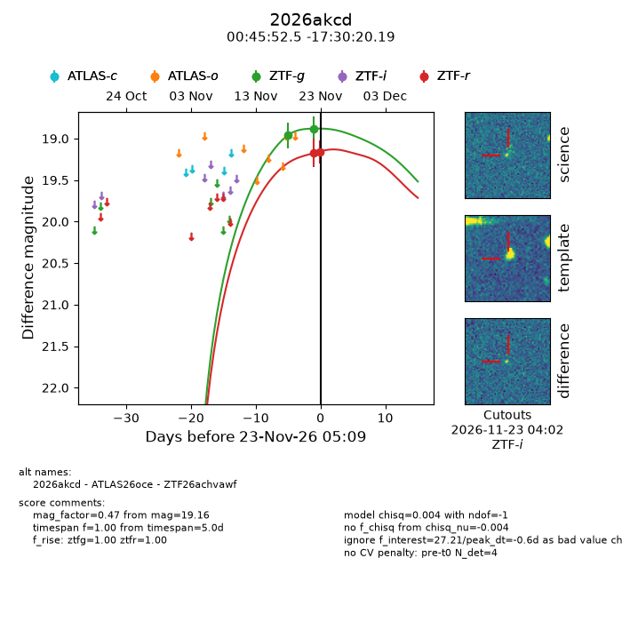
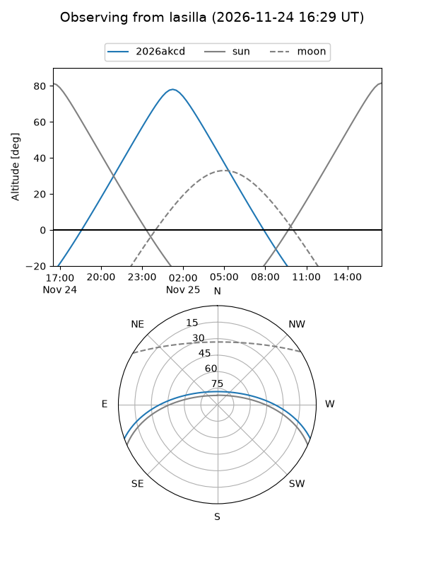
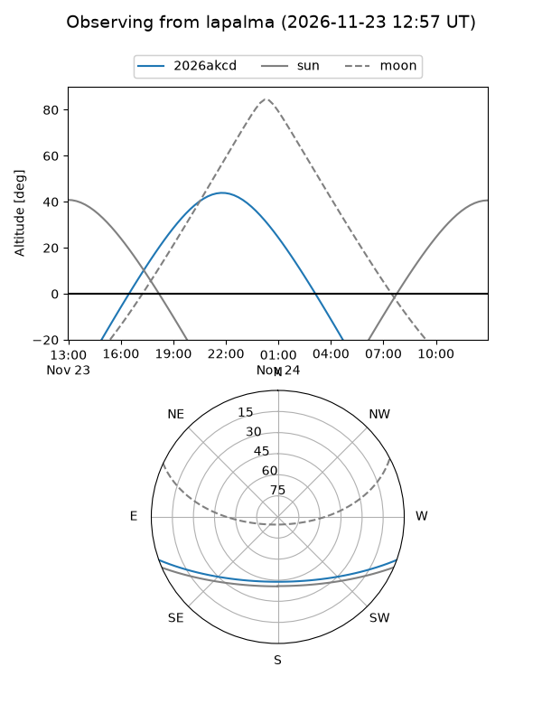
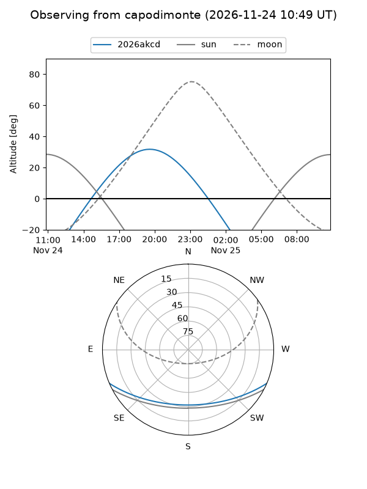
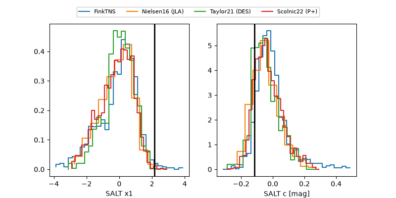

2026akcd
Target 2026akcd at 2026-11-23 05:10
Aliases and brokers:
FINK-ZTF: ztf.fink-portal.org/ZTF26achvawf
Lasair-ZTF: lasair-ztf.lsst.ac.uk/objects/ZTF26achvawf
ALeRCE-ZTF: alerce.online/object/ZTF26achvawf
YSE-PZ: ziggy.ucolick.org/yse/transient_detail/2026akcd
TNS name: wis-tns.org/object/2026akcd
Direct TNS query: direct search
alt names
ZTF26achvawf (ztf,fink_ztf)
2026akcd (tns,yse)
ATLAS26oce (atlas)
Coordinates:
equatorial (ra, dec) = 11.4687,-17.50561
equatorial (HMS+DMS) = 00:45:52.48,-17:30:20.19
galactic (l, b) = (115.0418,-80.29202)
Flags:
peak dt: -0.6
Photometry:
last ztfg=18.88, ztfr=19.16
2 ztfg, 2 ztfr detections
Lightcurve

Visibility



Additional plots
